ELEC 4700 Assignment 3: Monte Carlo MD with FD Electric Field
Tyler Armstrong, 101009324
In this experiment, the molecular dynamics simulation from Assignment 1 was modified to include an electric field, calculated using the finite difference code from Assignment 2. The electric field comes from an electric field separate from the electrons; there is no interaction between them.
Contents
Part 1: Constant Electric Field
The first case demonstrated here is an electric field constant across all space. This was not calculated using FD; the electric field is just 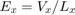, and 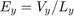. The voltages used here were 0.1V and -1V in the x- and y-directions, respectively.
A current density plot will be generated here. The current density can be calculated from the following formula:
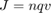
Where is the charge carrier density (here assumed to be 10e15cm^2), is the elementary charge, and is the velocity of the carriers. The plots are shown below.
EFieldElectrons(0,1);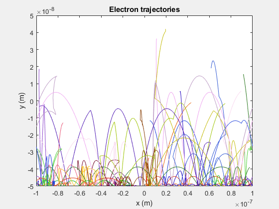 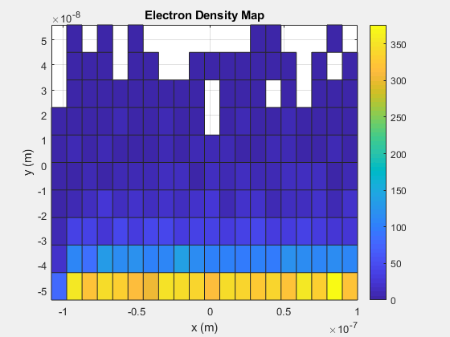 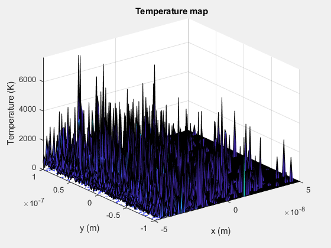 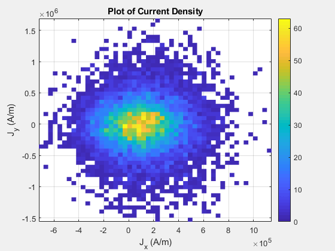
The electric field caused the electron trajectories to curve greatly. The current density map shows that most of the current densities from each particle (which represents multiple electrons) have low positive values in the x-direction. This is likely because of the low positive voltage in the x-direction. However, most of the y-direction currents are around zero. This is unexpected, given the larger negative voltage in the y-direction.
Part 2: Electric Field with FD
Next, the finite difference method was used to calculate the electric field at each point in space. A voltage of 1V was applied at the x-boundaries, with a voltage of 0V at the y-boundaries. Conductive boxes placed at the centre of the top and bottom edges with dimensions 40nm x 20nm and conductivity 1e-2S were added.
BoxFieldFDPlots(200e-9,100e-9,200,100,40e-9,20e-9,1,1e-2);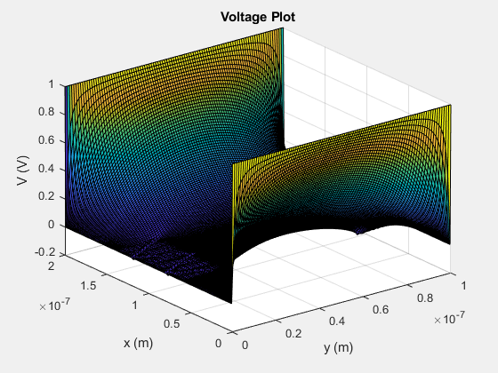 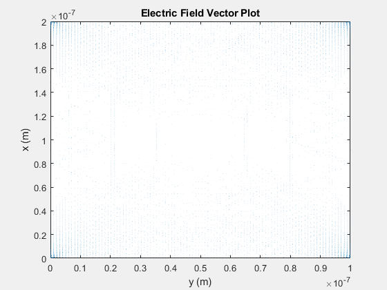
This produces a saddle shape in the potential, with the area inside the boxes fluctuating around zero. Now, this potential can be incorporated into the MD simulation.
Part 3: MD with Boxes, and FD Electric Field
The final simulation adds the conductive boxes to the MD simulation, with the electric field calculated in the previous section. The results are shown below.
EFieldElectrons(2,0);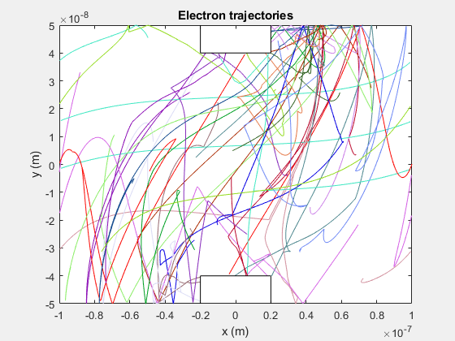 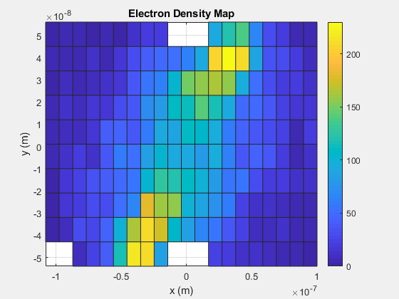 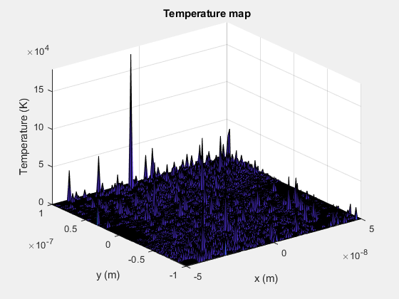
One possible next step to improving this simulation is to add a contribution to the electric field based on the number of electrons in each mesh cell. With this, the particles will interact with each other instead of existing in a void. However, this may add significant extra computation time if the solver needs to be run every iteration.